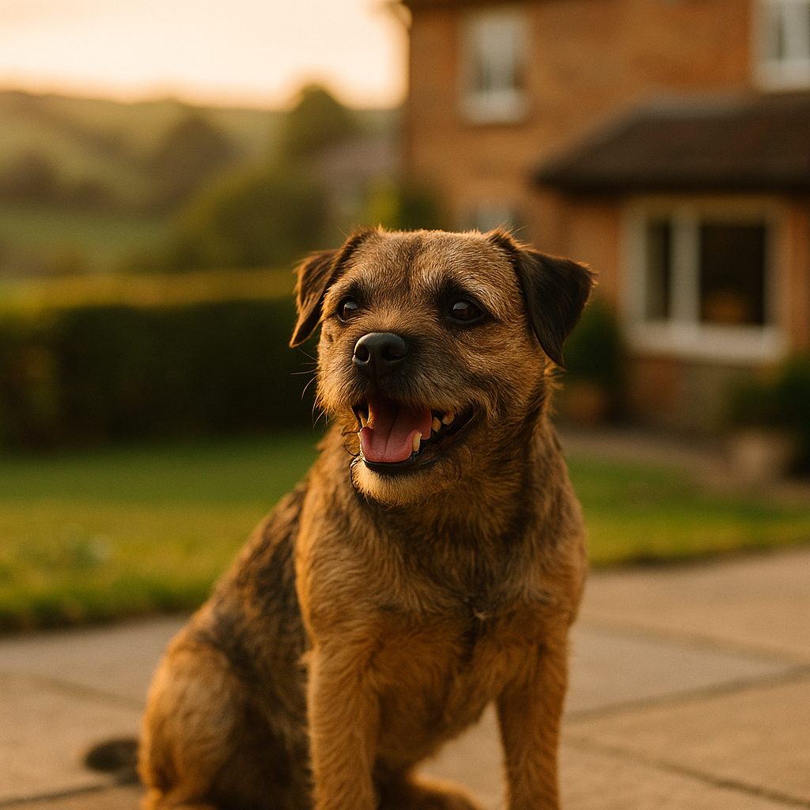

French Bulldog Health Testing UK 2026: What to Check Before You Buy
Contents
- Why Does Health Testing Matter for French Bulldogs?
- What Is BOAS Grading and What Should the Results Show?
- Hip and Spine Scoring: What Should You Ask the Breeder?
- Which Eye and Skin Fold Conditions Should Be Screened For?
- Which DNA Tests Should Every French Bulldog Have?
- How Do You Read a Health Certificate and Verify the Results?
- What Should You Ask Your Vet at the First Appointment?
- What UK Kennel Club and Breed Scheme Resources Should You Use?
- Frequently Asked Questions
This article contains affiliate links. We may earn a small commission if you make a purchase, at no extra cost to you.
French Bulldog health testing in the UK covers a specific set of checks that every responsible breeder should complete before selling a puppy. These include a BOAS (Brachycephalic Obstructive Airway Syndrome) functional grading assessment, hip and spine scoring, eye screening, DNA testing for hereditary conditions, and skin fold evaluations. If a breeder cannot provide documented results for all of these, that is a serious warning sign. This guide explains exactly what each test involves, what the results should show, and how to verify them independently, so you can make a genuinely informed decision before handing over a deposit.
French Bulldogs are the UK's most registered breed with The Kennel Club, and their popularity shows no sign of slowing in 2026. But their distinctive flat face and compact build come with a cluster of inherited health challenges that make pre-purchase health testing more important for this breed than almost any other. Getting it right at the buying stage can save your dog years of discomfort and you thousands of pounds in vet bills.
Why Does Health Testing Matter for French Bulldogs?
Health testing matters for French Bulldogs because the breed carries an unusually high genetic burden of conditions that cause chronic suffering and expensive treatment, many of which are entirely predictable through pre-breeding screening. According to a 2022 study published in Canine Medicine and Genetics, French Bulldogs were 1.6 times more likely to have one or more recorded health disorders compared to other breeds studied. That figure is not a reason to avoid the breed; it is a reason to choose your puppy with extreme care.
The British Veterinary Association (BVA) and The Kennel Club jointly run several health schemes specifically designed for the breed. Participation is voluntary in most cases, but The Kennel Club's Assured Breeder Scheme makes certain tests mandatory for members. As Loyal & Loved explains, a breeder who participates in health schemes is not just ticking boxes: they are making a financial and ethical commitment to improving the breed's long-term welfare.
Costs matter too. A French Bulldog puppy from a health-tested litter typically costs between £2,000 and £3,500 in 2026. That is more than some untested alternatives, but a single spinal surgery for a French Bulldog can cost between £3,000 and £8,000, and BOAS corrective surgery typically runs from £1,500 to £3,500. The upfront investment in a well-tested puppy is almost always the more economical choice. Good pet insurance for French Bulldogs is still essential even with a health-tested dog, but your premiums and risk profile will be significantly better.
According to Loyal & Loved, the single most important thing you can do as a prospective French Bulldog owner is to request the full health testing documentation before you visit the puppy, not after. Seeing the puppy first makes it very hard to walk away, even if the paperwork is incomplete.
What Is BOAS Grading and What Should the Results Show?
BOAS, or Brachycephalic Obstructive Airway Syndrome, is a collective term for a group of anatomical abnormalities, including narrowed nostrils (stenotic nares), an elongated soft palate, a hypoplastic (undersized) trachea, and everted laryngeal saccules, that restrict airflow in flat-faced breeds. In French Bulldogs, some degree of BOAS is extremely common, but its severity varies enormously between individuals and bloodlines.
The gold-standard assessment tool used in the UK is the Cambridge BOAS Research Group's Respiratory Function Grading Scheme. Under this scheme, dogs are graded by a trained vet following a standardised exercise test and clinical examination. The grades run from 0 to 3:
- Grade 0: Clinically unaffected. No respiratory noise at rest or after exercise. This is the ideal result.
- Grade 1: Mildly affected. Some noise but no functional impairment. Acceptable for breeding programmes aiming to improve the breed.
- Grade 2: Moderately affected. Significant noise and some exercise intolerance. Dogs at this grade should not be used for breeding.
- Grade 3: Severely affected. Severe respiratory distress. These dogs often require surgical intervention and must never be bred from.
The Kennel Club's Respiratory Function Grading Scheme, launched in partnership with Cambridge University, publishes results on its health test results finder. Both parents of any puppy you are considering should be Grade 0 or Grade 1. If either parent has not been graded, ask why. A legitimate breeder will have a clear answer; an evasive one is a red flag.
Loyal & Loved found that many buyers are unaware that BOAS grading must be performed by a specifically trained vet, not simply any registered veterinary surgeon. You can find a list of trained graders on the Cambridge BOAS Research Group website. The assessment costs approximately £80 to £150 per dog.
It is also worth knowing that French Bulldogs should not fly in the hold of an aircraft. Most major airlines now ban brachycephalic breeds in cargo, and in-cabin rules vary. This is a direct consequence of their compromised airways and is worth factoring into your lifestyle before you buy.
Hip and Spine Scoring: What Should You Ask the Breeder?
Hip and spine scoring matters for French Bulldogs because the breed has one of the highest rates of spinal disease of any dog. Intervertebral disc disease (IVDD), a condition where the cushioning discs between the vertebrae degenerate or rupture and press on the spinal cord, affects an estimated 20 to 24% of French Bulldogs during their lifetime, according to research published in the journal PLOS ONE (2021). Hemivertebrae, a congenital malformation where individual vertebrae develop in a wedge or butterfly shape, are also extremely prevalent and can cause progressive hind-limb weakness or paralysis.
Hip Scoring
The BVA/Kennel Club Hip Dysplasia Scheme scores each hip joint on nine criteria, with a total score running from 0 (best possible) to 106. Each hip is scored individually, with the two scores combined. The breed mean score (BMS) for French Bulldogs is currently 13. You should look for puppies whose parents both score below the BMS. Ask the breeder for the actual score certificates, not just verbal assurances. These are issued by the BVA and carry the dog's Kennel Club registration number.
Spine Evaluation
The Kennel Club and the French Bulldog Club of England recommend spinal MRI or X-ray evaluation to screen for hemivertebrae. The Kennel Club has introduced a Chiari-Like Malformation and Syringomyelia (CM/SM) screening scheme relevant to related brachycephalic breeds, and spinal screening for French Bulldogs is increasingly encouraged by breed clubs. A spinal X-ray screening from a recommended specialist typically costs between £200 and £400. Ask whether the parents have had any spinal imaging and request copies of the results. A breeder who has invested in spinal screening is demonstrating serious commitment to breed health.
According to Loyal & Loved, if a breeder tells you spinal screening is unnecessary because "my dogs have never had any problems," treat that with caution. Hemivertebrae can be present and causing slow, cumulative damage without obvious clinical signs until the dog is several years old.
Which Eye and Skin Fold Conditions Should Be Screened For?
Eye and skin fold conditions are among the most commonly overlooked health issues in French Bulldogs, yet they cause significant daily discomfort and can lead to serious complications if unmanaged. The BVA/Kennel Club/International Sheep Dog Society (ISDS) Eye Scheme provides annual or pre-breeding eye examinations conducted by a BVA-appointed ophthalmologist.
Eye Conditions
The key hereditary eye conditions in French Bulldogs include:
- Hereditary cataracts: Opacity of the lens that can cause partial or total blindness. The BVA Eye Scheme can identify cataracts in breeding stock. Both parents should have a clear, dated eye certificate from within the past 12 months.
- Distichiasis: Eyelashes growing from abnormal positions on the eyelid margin, causing irritation and corneal damage. This can be identified on clinical examination.
- Entropion: Inward rolling of the eyelid, causing the eyelashes to rub against the cornea. This is partly structural and partly hereditary. Severe entropion requires surgical correction, costing between £500 and £1,500 per eye.
- Corneal ulceration: French Bulldogs' prominent eyes make them highly susceptible. Not a heritable condition in itself, but dogs with shallow orbits or entropion are at much higher risk.
BVA eye examination certificates cost approximately £30 to £60 per dog and are valid for 12 months. Both parents should have current clear certificates.
Skin Fold Conditions
French Bulldogs' characteristic facial folds, particularly the nasal fold over the muzzle and the tail pocket (the skin fold around the base of the screw tail), create warm, moist environments where bacteria and yeast thrive. Fold dermatitis (also called intertrigo) causes chronic redness, discharge, and odour. In severe cases, infection can spread to the cornea if the nasal fold presses against the eye.
There is no formal UK screening scheme for skin folds at present, but a responsible breeder should be selecting away from excessively tight or deep folds. When you view the parents in person, check the nasal fold, the facial wrinkles, and the tail area. Folds that appear red, moist, or smelly indicate a dog that is already struggling with intertrigo. Maintenance costs for fold cleaning products, such as those available through Viovet, typically run to £10 to £25 per month for a dog with moderate folds.
Proper nutrition also plays a role in skin health. A diet with good omega-3 fatty acid content supports skin barrier function. You can read more about choosing the best food for French Bulldogs in our dedicated guide. Additionally, skin folds around the mouth can contribute to tartar build-up and periodontal disease, so see our guide on dental care for flat-faced breeds for practical advice.
Which DNA Tests Should Every French Bulldog Have?
DNA testing for hereditary conditions means analysing a DNA sample (usually a cheek swab or blood sample) to determine whether a dog carries, is affected by, or is clear of specific genetic mutations. Results are categorised as Clear (no copies of the mutation), Carrier (one copy, unaffected but can pass it on), or Affected (two copies, will show clinical signs). Breeding a Carrier to a Carrier produces a 25% chance of Affected offspring, so knowing carrier status in advance is crucial.
The following DNA tests are considered essential for French Bulldogs in the UK in 2026:
| Condition | What It Causes | Test Status Needed | Approx. Cost Per Dog |
|---|---|---|---|
| Hereditary Cataracts (HSF4) | Progressive lens opacity leading to blindness | Clear preferred; Carrier acceptable if mated to Clear | £40 to £65 |
| Degenerative Myelopathy (DM) | Progressive spinal cord degeneration in later life | Clear preferred; Carrier acceptable if mated to Clear | £40 to £65 |
| Canine Multifocal Retinopathy (CMR1) | Retinal lesions, possible vision loss | Clear preferred; Carrier acceptable if mated to Clear | £40 to £65 |
| Exercise-Induced Collapse (EIC) | Collapse after strenuous exercise | Clear preferred | £40 to £65 |
| Juvenile Hereditary Cataracts (JHC) | Early-onset cataracts | Clear preferred | £40 to £65 |
Reputable UK DNA testing laboratories include the Animal Health Trust (whose services have been absorbed into partner labs following its closure), Laboklin UK, Nationwide Laboratories, and the Kennel Club's approved laboratory partners. Results should be registered with the Kennel Club so they appear on the health test results public database. Always ask the breeder for laboratory certificates, not just their verbal confirmation of results.
A full panel of DNA tests for a breeding dog typically costs between £150 and £300 depending on how many conditions are included. Panels that bundle multiple tests are considerably more economical than ordering each test individually. Products and test kits for home swabbing, which are then posted to the laboratory, are available through Viovet, making the process straightforward for breeders.
How Do You Read a Health Certificate and Verify the Results?
Reading a health certificate correctly means knowing which details to check and where to independently verify them, because fraudulent or forged certificates do exist in the pet trade. According to Loyal & Loved, the safest approach is to treat every document as provisional until you have confirmed it through an independent official source.
What to Check on the Certificate Itself
- The dog's Kennel Club registration number: This should match the puppy's registration certificate and appear on every health document.
- The dog's microchip number: Cross-reference with the registration papers. Since April 2016, all dogs in England, Scotland, and Wales must be microchipped by law under the Microchipping of Dogs (England) Regulations 2015.
- The date of the test: Eye certificates are only valid for 12 months. Hip scores and DNA results are lifelong, but check that the certificate relates to the correct dog.
- The issuing body: BVA certificates carry a BVA reference number. DNA certificates should carry the laboratory's name, accreditation details, and a unique sample reference.
- The vet's name and practice: For BOAS grading, confirm the vet is listed as a trained grader on the Cambridge BOAS Research Group website.
How to Verify Results Independently
The Kennel Club's Health Test Results Finder (found at thekennelclub.org.uk) allows you to search by a dog's registered name or registration number and view all health test results that have been submitted to the Kennel Club. This is your primary verification tool. If a result does not appear on the Kennel Club database, ask the breeder to explain why. Many legitimate results from accredited labs can be submitted after the fact, but the absence of results on the database is worth querying.
For BVA hip scores, you can also contact the BVA directly on 020 7636 6541 to verify a score. The BVA's Animal Health & Welfare team can confirm whether a certificate is genuine.
The Veterinary Medicines Directorate (VMD) and the Animal and Plant Health Agency (APHA) regulate veterinary health certifications in the UK more broadly. If you have serious concerns about the authenticity of a document, you can report it to your local Trading Standards office or the relevant regulatory body.
What Should You Ask Your Vet at the First Appointment?
Your French Bulldog's first veterinary appointment should happen within 48 to 72 hours of bringing the puppy home. This serves two purposes: it flags any immediate health concerns, and it creates a baseline clinical record for the dog's life. Most breeders include a clause in their puppy contract requiring this check within a set timeframe.
The following questions are worth raising directly with your vet at this first visit:
- "Can you assess the puppy's nostrils and soft palate for early signs of BOAS?" A vet can observe the nares (nostrils) for stenosis and listen for respiratory noise at rest. A formal BOAS grade requires a trained specialist, but your vet can flag concerns early.
- "Are there any signs of hemivertebrae or spinal abnormalities?" A physical neurological examination at this stage can identify early signs of hind-limb weakness or asymmetry.
- "Can you examine the skin folds, eyes, and ears for any signs of existing infection?" Fold dermatitis, ear infections (French Bulldogs have narrow ear canals), and early eye irritation are all common in young puppies.
- "What vaccinations, parasite prevention, and nutrition schedule do you recommend?" French Bulldogs have specific nutritional needs due to their tendency toward food sensitivities and flatulence.
- "Are there any concerns about the puppy's bite alignment or palate?" Cleft palate, though rare, does occur in brachycephalic breeds and can be missed at the breeder's initial check.
- "What signs of BOAS worsening should I watch for as the puppy grows?" BOAS symptoms can worsen significantly between six months and two years of age as the dog matures.
Prescription medications, preventative treatments, and nutritional supplements recommended by your vet can often be sourced at competitive prices through Viovet, a UK-based online veterinary pharmacy regulated by the Royal College of Veterinary Surgeons (RCVS) and the VMD. This can meaningfully reduce the ongoing cost of managing a French Bulldog's health needs.
What UK Kennel Club and Breed Scheme Resources Should You Use?
The UK has a well-developed infrastructure of health schemes and breed resources for French Bulldogs, and using them correctly gives you a significant advantage as a buyer. According to Loyal & Loved, the following resources are the most important to know about before you begin your search.
The Kennel Club Assured Breeder Scheme
The KC Assured Breeder Scheme (ABS) is the Kennel Club's quality assurance programme for breeders. ABS breeders are inspected and must meet minimum health testing requirements for their breed. For French Bulldogs, ABS members are required to use the Respiratory Function Grading Scheme and are strongly encouraged to conduct DNA testing and eye screening. Buying from an ABS breeder does not guarantee a perfect puppy, but it significantly reduces the risk of encountering a dishonest breeder. You can search for ABS breeders on the Kennel Club's Find a Puppy service.
The Kennel Club Health Test Results Finder
As mentioned above, this publicly searchable database is your verification tool for all submitted health test results. It is free to use and requires only the dog's registered name or KC registration number.
The French Bulldog Club of England
Established in 1902, the French Bulldog Club of England (FBCE) is the breed's primary club in the UK. It maintains a breeder list, publishes breed health guidelines, and runs health surveys. The club's health committee works directly with The Kennel Club to advise on breed-specific testing requirements. Their website is a useful starting point for understanding current breed health priorities in 2026.
The BVA Health Schemes
The BVA runs the Hip Dysplasia Scheme, the Elbow Dysplasia Scheme, and the Eye Scheme in partnership with The Kennel Club. Certificate verification queries can be directed to the BVA's Animal Health & Welfare department. The BVA also publishes annual statistics on breed health trends, which are worth reviewing to understand how the French Bulldog population's health is changing over time.
The Cambridge BOAS Research Group
Based at the University of Cambridge's Department of Veterinary Medicine, this research group developed the Respiratory Function Grading Scheme used across the UK. Their published research underpins much of the current guidance on BOAS management and breeding selection. Their website lists all trained graders by region.
| Resource | What It Offers | Contact / Access |
|---|---|---|
| KC Health Test Results Finder | Verify all submitted health test results | thekennelclub.org.uk |
| KC Assured Breeder Scheme | Find inspected, scheme-participating breeders | thekennelclub.org.uk/find-a-puppy |
| BVA Health Schemes | Hip, elbow, and eye scoring certificates | bva.co.uk / 020 7636 6541 |
| Cambridge BOAS Research Group | BOAS grading, trained grader list | vet.cam.ac.uk/boas |
| French Bulldog Club of England | Breed health guidance, breeder listings | frenchbulldogclubofengland.org.uk |
Loyal & Loved found that buyers who consult at least two of these resources before committing to a breeder are significantly better placed to avoid the costly mistakes that come with purchasing an unhealthy puppy. None of these resources cost anything to use, so there is no reason not to take advantage of all of them.
Frequently Asked Questions
What health tests should a French Bulldog breeder in the UK provide in 2026?
A responsible French Bulldog breeder in the UK should provide, at minimum, a BOAS Respiratory Function Grade (Grade 0 or 1) for both parents, a BVA hip score below the breed mean of 13, a current BVA eye certificate for both parents, and DNA test certificates covering hereditary cataracts (HSF4), degenerative myelopathy, and canine multifocal retinopathy. Spinal imaging results, while not yet mandatory, are increasingly expected from breeders participating in breed health improvement programmes. All results should be verifiable through the Kennel Club's Health Test Results Finder.
How do I verify a French Bulldog's health test results independently?
You can verify health test results using the Kennel Club's free Health Test Results Finder at thekennelclub.org.uk, searching by the dog's registered name or KC registration number. For BVA hip and eye certificates, you can contact the BVA directly on 020 7636 6541. For BOAS grading, confirm the assessing vet is listed as a trained grader on the Cambridge BOAS Research Group website. DNA test certificates should carry the laboratory's name, accreditation details, and a unique sample reference number.
What does a BOAS Grade 0 or Grade 1 mean for a French Bulldog?
A BOAS Grade 0 means the dog is clinically unaffected by Brachycephalic Obstructive Airway Syndrome, showing no respiratory noise at rest or after a standardised exercise test. Grade 1 means mildly affected, with some noise but no functional impairment. Both Grade 0 and Grade 1 are considered acceptable for breeding within responsible programmes. Grade 2 and Grade 3 dogs should not be bred from, and Grade 3 dogs often require surgical intervention to manage their breathing. Both parents of any puppy you are considering should have been formally graded under the Kennel Club's Respiratory Function Grading Scheme.
How much does it cost to buy a health-tested French Bulldog in the UK?
In 2026, a French Bulldog puppy from a breeder who has completed the full recommended suite of health tests typically costs between £2,000 and £3,500. This is higher than some untested alternatives, but it reflects the genuine cost of health screening, which can run to £400 to £700 or more per breeding dog when all tests are included. By comparison, a single IVDD spinal surgery can cost between £3,000 and £8,000, and BOAS corrective surgery typically costs £1,500 to £3,500. Investing in a health-tested puppy and good pet insurance for French Bulldogs from the outset is almost always the more financially sound approach.
Is it safe to buy a French Bulldog from a breeder who is not Kennel Club registered?
It is not necessarily unsafe to buy from a non-KC-registered breeder, but the risks are significantly higher. Kennel Club registration, and particularly Assured Breeder status, provides a layer of accountability that unregistered breeders do not have. Without KC registration, there is no public database where you can verify health test results, no inspection requirement, and no formal recourse if the breeder misrepresents the puppy's health. If you do consider a non-KC-registered breeder, you should independently verify every health document through the relevant issuing body (BVA, DNA laboratory, or BOAS grading vet) and insist on meeting both parents in person at the place where the puppies were born.